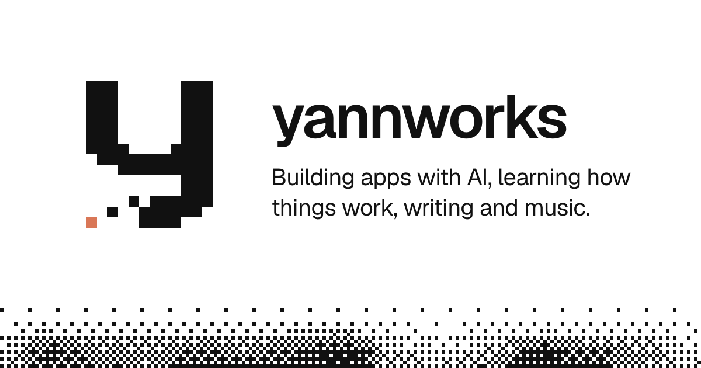

The parts of yannworks.github.io, drawn from the same files as the page. The theme button above plays the real dissolve.
Logo
A heavy lowercase y whose tail breaks into dots, drawn on a 16 x 16 grid by tools/make-logo.mjs: exact at 16 px, whole multiples above. Chosen by Yann on 22 November 2026 among four directions, all kept below. The favicon, the Apple icon, the profile pictures (img/profile/) and the header use it in ink only; the share image alone shows its last dot in orange. Tiles keep their own theme, whatever the board's.

Colours
Ink on paper, two greys for the cards and secondary text, and Clawd's orange as the only accent: in dots, in the graph's squares and in Clawd himself, never in small text. The ratios are computed from the live values of both themes.
Type
Geist for everything, Geist Serif (square dots, ELSH 25) for the highlighted keywords only.
I like building apps with AI and learning how things work.
Local time
The intro gives Yann's time in Paris, and how far it is from the visitor's own time when they differ. Digits are tabular, so the sentence keeps its width when the minute changes; the changed digits trade places through the dot masks in 240 ms (instantly with reduced motion).
Live, on this device: France.
Fix the time or the visitor's zone with ?now= (an ISO time; the clock runs on from there) and ?tz=, on this board or on the page, for example
index.html?now=2026-03-15T20:40:55Z&tz=America/New_York.
Links
Rest, hover (an inverted copy slides in from the left, 200 ms), keyboard focus, press (scale 0.97).
Button
The theme button: a square 44 px target with a pixel icon. Hover inverts, press scales to 0.92.
Dither levels
The 65 masks of the 8 x 8 Bayer grid, at 2 px a dot. The theme dissolve, the keyword print and the clock's digits step through these; the orange dots use the same thresholds.
Living dots
Clawd's orange in dots, only in empty space: under the intro's keywords (2 px dots), at the foot of the active card and at the end of the page (3 px). Each zone is a grid; a cell is on when the zone's density there (a curve broken into patches by a soft noise) is above the cell's threshold in the 8 x 8 Bayer grid. The cells never move: what changes is which ones are on, at 12 steps a second, from one loop (js/dots.js) that sleeps when nothing is busy, off screen or in a hidden tab. A new seed on every visit. With reduced motion every zone shows one still image. Chosen by Yann on 22 November 2026: Sparkle, Flow, Drift. The other six are kept below for comparison (js/dots-lab.js, board only).
1. Under the keywords (chosen: Sparkle): one-off, never while you read
2. The active card (chosen: Flow): alive while it is active and on screen
3. The end of the page (chosen: Drift): alive while on screen
Not chosen, for comparison
Motion
Entrance: fade and a 10 px rise, 640 ms, 65 ms apart (no rise with reduced motion). Dissolve: 500 ms (250 ms reduced). Card dots: rise from the bottom in 220 ms on the card you reach for and go down in 160 ms on the one you left (strong ease-out), with the light behind them; reached with the keyboard they are simply there; with reduced motion they fade in place in 160 ms.
An intro line enters first,
then a link,
then the next one.
Contribution graph
One square per day for the last 26 weeks, as wide as the column allows (6 to 16 px). GitHub's levels 1 to 4 are the four orange levels above, each at least 3:1 on paper. Clawd (2 px a cell, 44 x 32 px) walks in from the left the first time the graph is seen, blinks and bounces a little, then stands still; pointing at him or tapping him makes him wave with his happy face. The live graph below uses contributions.json when the GitHub Action has written it; until then it shows generated sample data, marked as such.
No JavaScript: the page shows a link to GitHub here.
Showcase
Three real components from Experiments, bundled with React by tools/showcase/build.mjs and loaded by js/showcase.js once the page has loaded and the section is on screen. They keep their own look; the site only adds the card (name, line, link, and the orange dots of the active card: point at a card, focus inside it or touch it).
Three components from my lab
-
Shoji Bento
A grid drawn with thin lines, like a paper screen. Drag a line and the boxes on each side make room.
Open in Experiments -
Gem Clip
A paper clip that copies the text it holds. Here it holds the command that downloads my whole lab. Click the clip to copy it. Tap the clip to copy it.
Open in Experiments -
Snooze Button
A button with sleepy eyes. Bring your pointer close to wake them, then press it: the pupils go round while it pretends to work. Tap it: the eyes wake up, and the pupils go round while it pretends to work.
Open in Experiments
Without JavaScript, or if the bundle fails to load (class is-failed): the stages take no room, the names, lines and links stay, and there are no dots.
Shoji Bento
A grid drawn with thin lines, like a paper screen. Drag a line and the boxes on each side make room.
Open in ExperimentsGem Clip
A paper clip that copies the text it holds. Here it holds the command that downloads my whole lab. Click the clip to copy it. Tap the clip to copy it.
Open in ExperimentsSnooze Button
A button with sleepy eyes. Bring your pointer close to wake them, then press it: the pupils go round while it pretends to work. Tap it: the eyes wake up, and the pupils go round while it pretends to work.
Open in Experiments
The components' own colours, measured in both themes once they are loaded (WCAG: 4.5:1 for text, 3:1 for shapes you need to see):
- Measured when the components are on screen.
Clawd's poses
The 18 grids the graph uses, from js/clawd-sprites.js (generated from the clawd skill by tools/make-clawd.py), at 3 x.